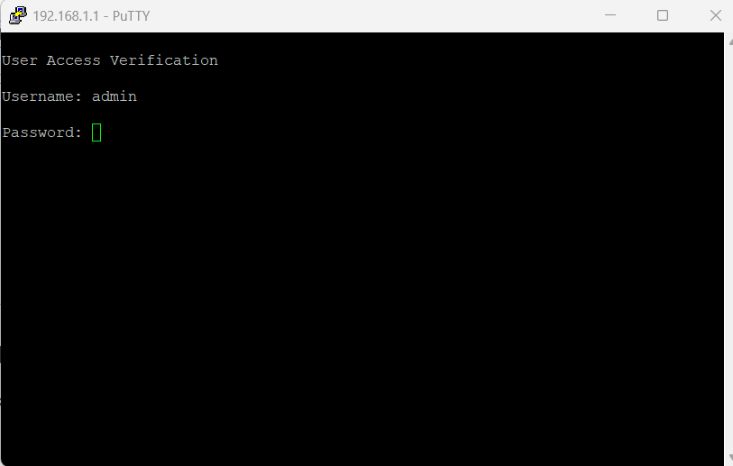

Bypassing JF Router with VSOL V2802RH ONU
JF provides high-speed internet services but locks users into their proprietary routers. However, by using a VSOL V2802RH ONU (Optical Network Unit), you can bypass the JF router and directly connect your own router. This guide will take you through the step-by-step process.
Step 1: Router Brand Name + Obtain the JF-Router’s WAN MAC Address
JF-Router have a 4-character brand name that must be combined with the last 8 characters of your MAC address (excluding colons :) to create the GPON Serial Number.
- Identify the 4-character brand name from the router. (Example: SCOM)
- Note: In 99% of cases, the JF-Router brand name is SERCOMM.
- Extract the last 8 characters of your MAC address (ignoring colons). For example, if your MAC address is 5a:9f:20:5F:21:18, remove the colons and select only the last 8 characters: 205F2118.
- Construct the GPON Serial Number (SN) by appending these values.
- Example GPON SN: SCOM205F2118
- Ensure all letters are capitalized.
Step 2: Login to Your VSOL ONU
To configure the VSOL ONU, follow these steps:
Enable Telnet
- Access the ONU web interface by entering 192.168.1.1 in your browser.
- Navigate to Advanced > Other from the left panel.
- Locate the Telnet option and enable it.
Adjust Firewall Settings (If Required)
If you face issues accessing Telnet, ensure the firewall is set to low:
- Go to Firewall > ACL in the left panel.
- Change the Firewall Level to Low.

Step 3: Configure GPON Serial Number via Telnet
Once Telnet is enabled, configure the GPON SN using the following method:
- Download Putty from putty.org.
- Open Putty and enter your ONU IP (192.168.1.1).
- Login using:
- Username: admin
- Password: (use default or previously set password)

- Execute the following command to set the GPON Serial Number:
flash set GPON_SN SCOM205F2118
Press Enter
- Restart the ONU.
Press Enter
Step 4: Configure VLAN Settings
Now, configure the VLAN settings on the VSOL ONU:
- Go to Setup > WAN in the ONU interface.
- Locate the VLAN section and make the following changes:
- VLAN ID: Set to 1015
- VLAN Cos: Set to 0 (Zero)
- Leave all other settings as default.
- Click Add to save the settings.
Step 5: Configure Your Router (Example: UDM Pro)
If you are using a third-party router, such as UDM Pro, follow these steps:
- Login to your router.
- Navigate to Settings > Internet.
- Select the WAN port you want to use (Primary or Secondary).
- Example: If using WAN 2, click on WAN2.
- Find the MAC Address Clone option and enter the WAN MAC address obtained from the JF-Router.

Enjoy your unrestricted internet setup!